点餐 H5 项目是基于到店正餐和线上预点餐两大点餐场景的复杂大型应用，打通多条支付线路包括先付、后付及秒付；兼容 美团点评APP 双平台。引入 webpack4 对整个项目以怎样的方式打包和项目本身的这些业务没多大关系，重要的是在知晓项目的整体结构以及文件内资源引用关系的前提下，通过这个工具能对整体应用的性能提升有所帮助。这次的性能提升实践主要聚焦在 打包速度 和 打包体积 两个点。

先看下项目之前 webpack 对整体的打包流程。

可以看到，点餐 H5 项目采用的是多入口加载页面的方式，通过各类加载器从入口文件中层层处理，抽离出 HTML 模版所需资源，其中用到了两个重要的插件 CommonChunkPlugin 和 ExtractTextPlugin，它们的作用分别是抽取多入口 chunk 间的公共资源及从 js 文件中抽离 css 资源，由于项目应用于点评和美团 APP 双平台，为了实现资源复用及样式的分平台展示，将美团侧 css 文件加到入口中进行打包，并在HTML模版中根据平台不同引入不同的 css 资源。
webpack4 优化要点
对整体项目的打包流程有了大致了解后，下面就是将 webpack4 的变更点和项目打包流程相结合，针对性地做一些升级工作。这次 webpack4 最重要的变更点是移除了 CommonChunkPlugin 插件，改用 SplitChunksPlugin 进行更加灵活的配置。它的作用和插件 CommonChunkPlugin 功能类似，为了抽取公共模块，而 SplitChunksPlugin 可以做更精细的抽取控制。
同时，目前版本的 ExtractTextPlugin 插件对 webpack4 支持性不佳，采用具有相同功能的 MiniCssExtractPlugin。
为了加快构建速度，项目的 beta 环境引入了 happypack4.0，由于该版本不兼容 webpack4，此次升级到支持的版本 happypack5.0。
由于开发环境和生产环境的配置有很多重复的地方，引入 webpack-merge 插件抽出相同配置。
并且针对生产环境，优化 sourcemap 设置，降低压缩包体积。
以下是此次引入的主要升级点。
| 优化点 | 说明 |
|---|---|
| 引入SplitChunksPlugin | 替换 CommonChunkPlugin，抽取公共模块 |
| 引入MiniCssExtractPlugin | 替换 ExtractTextPlugin，抽离 css 资源 |
| 升级happypack5.0 | 弃用 happypack4.0，兼容 webpack4 |
| 生产环境优化sourcemap设置 | 降低整体 JS 包体积 |
| 引入webpack-merge | 抽出开发环境和生产环境相同配置 |
优化关键点介绍
sourcemap
sourcemap 通过 webpack 的 devtool 字段设置，它的作用是为了解决开发代码与打包压缩后代码不一致时帮助我们 debug 到原始开发代码的技术。
在开发环境中，我们会经常用到调试，生成了 sourcemap，会让我们很方便定位到我们的原始开发代码；而在生产环境中，通常由于私密安全性考虑，并不想以任何方式暴露核心开发代码，这种情况则可以不生成 sourcemap，当然视公司或者团队而定。
happypack
happypack 为加速 webpack 的任务执行而生，webpack本是单一进程执行编译打包流程，happypack 可充分利用服务器的多核 CPU 运算，开启多个子进程并行处理多个 webpack 任务，从而提升执行速度。
对于开发环境来说，提升打包速度是提升开发效率的一个重要因素，对此，happypack 应用广泛。
对于生产环境，由于生产环境更关心打包体积，打包体积是影响线上良好体验的关键，对于发布服务器占用率较高情况下，不引入 happypack，能保障更好的打包稳定性。
SplitChunksPlugin
SplitChunksPlugin 是替换 CommonChunkPlugin 的 webpack4 新特性。也是 webpack 更新到4x版本的重点内容，相对于 CommonChunkPlugin来说，SplitChunksPlugin 对于提取代码的公共部分有更精细的控制。
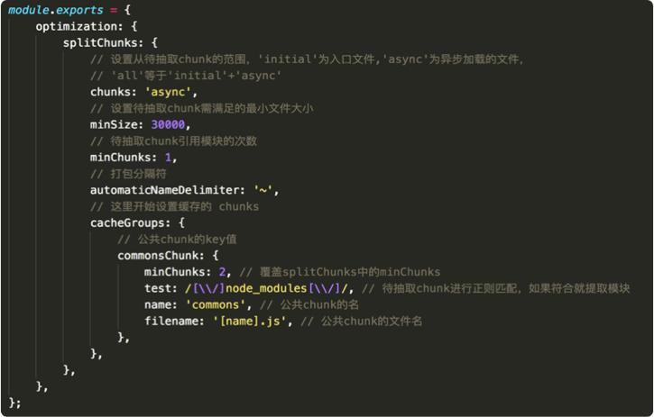
升级前后配置
本次 webpack4 引入项目是在保持整体项目打包方案不变的情况下，有针对性地做升级服务，包括上面介绍的插件更新和相应的替换方案。由于项目的开发环境和生产环境的特质不同，前者注重打包速度，后者关注打包体积，因此需要有针对性地做分别配置。
项目的自动化构建及配置文件结构和之前保持一致。
- webpack.config.js，存放环境变量和配置文件调用的映射。和原有保持不变
- env.js，获取环境变量。和原有保持不变。
- happypack.js，用于开发环境，通过开启多进程并发处理 webpack 任务，提升打包速度。升级插件到5.0及替换CSS抽离方案。
- webpack.base.config.js，存放开发环境和生产环境的重复配置。替换 CSS 抽离方案。
- webpack.beta.config.js，针对 beta 环境的配置。引入 webpack-merge。
- webpack.dll.config.js，用于开发环境，提取第三方常用模块。增加mode属性。
- webpack.product.config.js，针对生产环境的配置。引入 webpack-merge 和 SplitChunksPlugin。
- gulpfile.js，打包流程的自动化构建。和原有保持不变。
开发环境
开发环境重视打包速度的提升，从而提升开发效率。采用简单粗暴的方式将常用资源通过 dll 配置文件提取，并引入 happypack 开启多进程加快构建速度。开发环境的变更涉及到 webpack.base.config.js、happypack.js 和 webpack.dll.config.js
webpack.base.config.js
webpack.base.config.js 的变更是将 ExtractTextPlugin 替换为 MiniCssExtractPlugin，加入 exclude 属性，减少搜索范围，并去掉 style-loader，因为 CSS 文件从 JS 中抽取出来了，并不需以 style 形式将 CSS 嵌入 HTML。
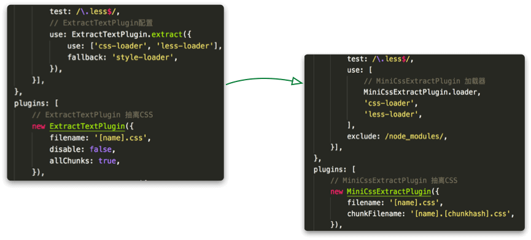
happypack.js
happypack 从之前的 4.0 升级到 5.0 以兼容 webpack4，并加入 MiniCssExtractPlugin.loader 如下。
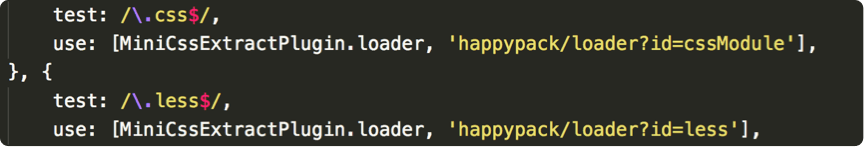
webpack.dll.config.js
webpack4 增加了 mode 属性，默认会以生产环境运行，在 webpack.dll.config.js 中增加 mode 属性，设置为开发环境。
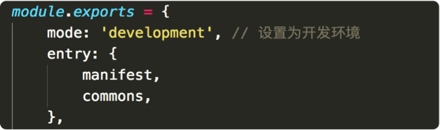
生产环境
生产环境重视打包后的体积，因此去掉了 happypack 以保障打包稳定性，并且去掉 dll 配置项，转而通过 SplitChunksPlugin 更充分地提取公共资源。生产环境配置的变更涉及到 webpack.base.config.js 和 webpack.product.config.js。webpack.base.config.js 的变更在开发环境中已提及，这里只介绍webpack.product.config.js 的前后变化。
webpack.product.config.js
可看到，生产环境的配置方式较大，但变化的功能点的都是为了提取多入口间的公共资源。升级前采取的是人为指定的方式，设置哪些是公共模块，而升级后，采用的是通过 test 属性设定公共模块存放的范围、chunks 设定待提取公共模块的对象即多入口文件及 minchunks 指定模块引用次数，让 webpack 更全面检索。相比之下能更完全、更准确地抽取各入口文件之间的公共模块。
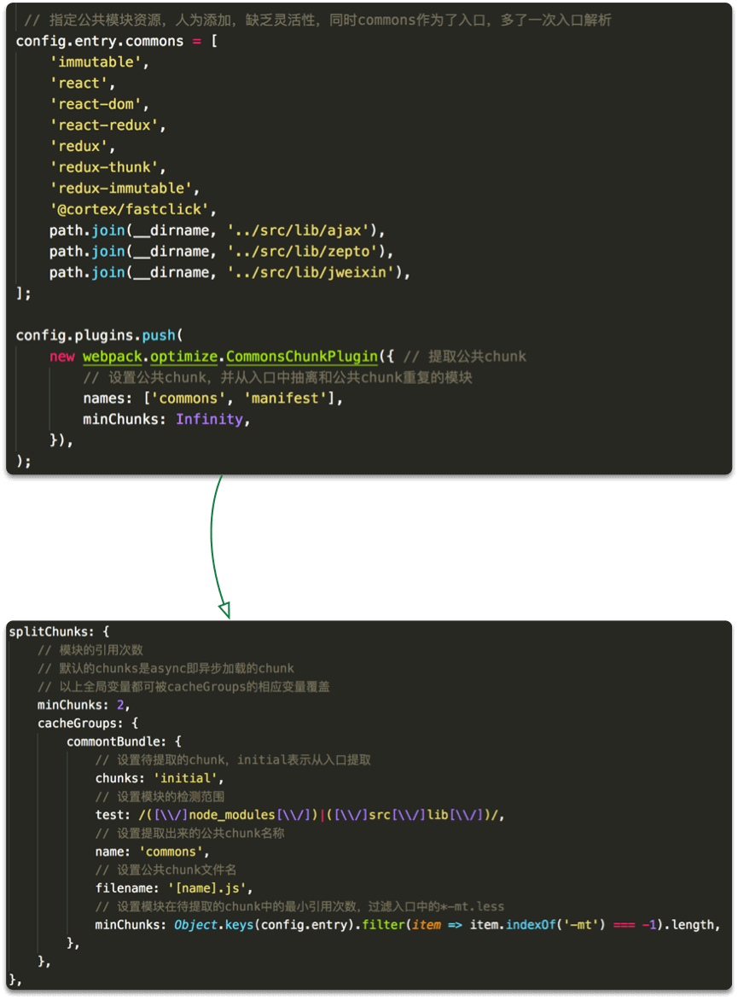
升级前后效果
项目整体性能的提升有很多因素可以考察，针对这次 webpack4 的引入和打包性能提升，主要考察打包速度、生产环境的包体积以及两个环境中页面 JS 资源加载速度。
打包速度
打包速度对于开发环境来讲很重要，会直接影响开发的效率，相比而言，开发环境对打包的包体积大小并不十分关注。
开发环境
以下分别是 webpack4 引入前后在开发环境下的打包时间对比，引入 webpack4 后，在不添加 happypack5. 时，打包时间基本和引入前加了 happypack 持平，添加 happypack5.0 后，打包速度大幅度提升，打包时间减少 59.4% 左右。
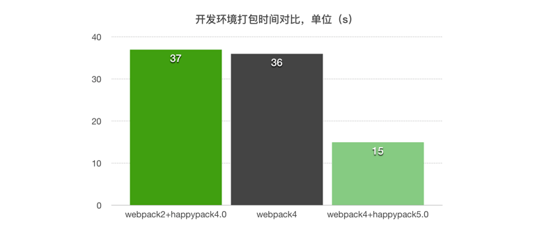
生产环境
以下分别是 webpack4 引入前后在生产环境下的打包时间对比，引入 webpack4 后，devtool 配置相同时，打包速度有小幅度提升，devtool 为 eval 时的打包速度有较大幅度提升，打包时间减少 30.6% 左右。
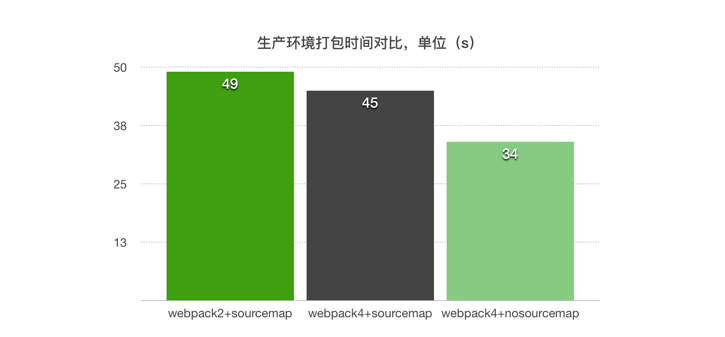
打包体积
打包体积的大小对于生产环境很重要，这次 webpack4 的引入主要考察打包后 JS 的体积变化，因为 CI 发布平台会对打包后的每个 JS 文件进行压缩，因此考察 JS 文件体积变化只限定打包后未压缩的情况。
commons 公共包
整体 JS 体积包的大小的重要影响因素就是多入口之间提取的公共 chunk 的大小即 commons.js 的大小，下面是升级前后 commons.js 包的大小，引入 webpack4 加入 SplitChunksPlugin 后，较之前大小提升了 20% 左右。通过 webpack-bundle-analyzer 分析它们各自内部包含的资源可看得更清楚。
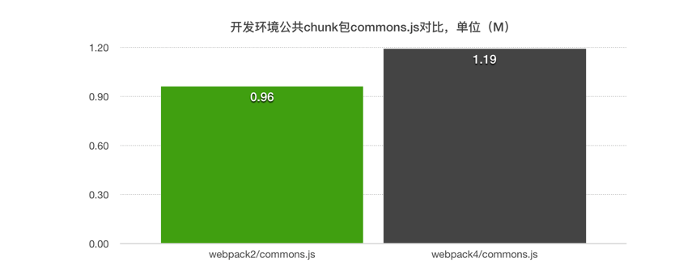
升级前的 commons.js 内部包含的资源。
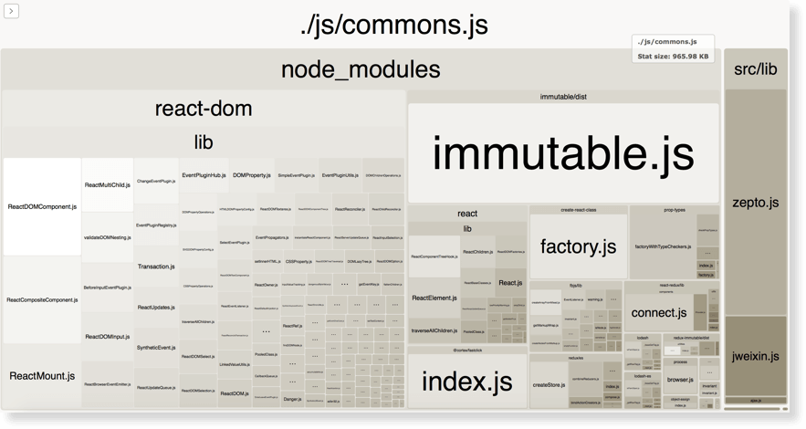
升级后的 commons.js 内部包含的资源。
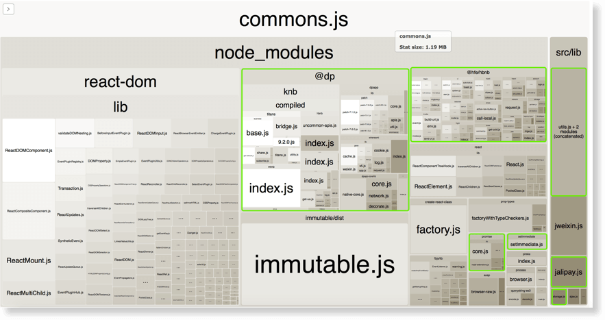
入口JS文件
抽取的 commons.js 体积越大，对总体JS包的体积下降越有利。通过 webpack-bundle-analyzer 来对比。升级前，总的入口 JS 文件体积为 26.41MB，升级后入口JS总体积为 16.91MB，总的入口 JS 体积减少了 35.9% 左右，可看出，各文件大小都有较大幅度减少，一方面得益于 webpack4 本身打包的优化，另一方面更得益于抽取了更多的公共 chunk 即 commons.js。
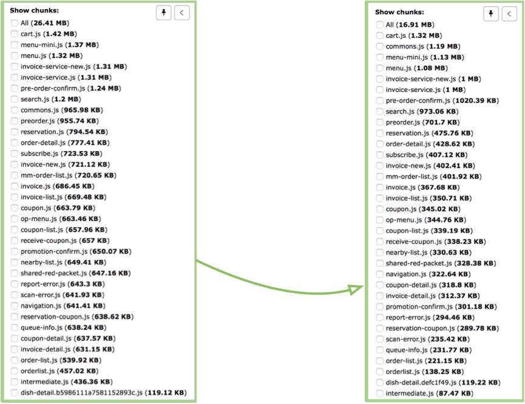
加之升级前各 JS 文件生成了独立的 sourcemap 文件，而升级后去除了 sourcemap 文件，使得总体的 JS 文件体积有更大的减少。当然，考察有效的 JS 资源即入口 JS 体积的变化对于整体项目的性能优化更具有意义。
页面JS资源加载速度
页面静态资源（包括 HTML、CSS、JS、图片等）的加载速度是用户最直观的感受，它速度的快慢会影响到用户的 APP 体验，下面是项目升级前后项目首页 JS 资源加载对比。
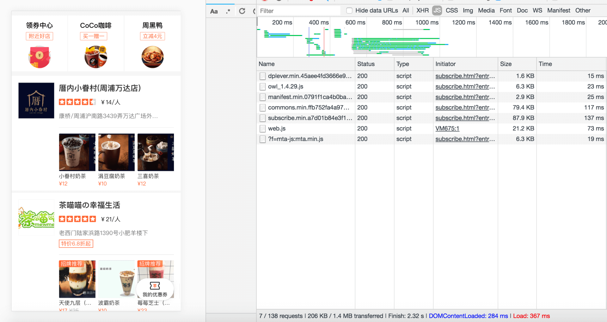
升级前的加载效果，可看到页面的两个核心业务 JS 文件 subscribe.min.[hash].js 和 commons.min.[hash].js，大小分别为 87.9KB 和 79.4KB，加载时间分别是 137ms 和 117ms，页面总体的资源加载时长为 367ms。
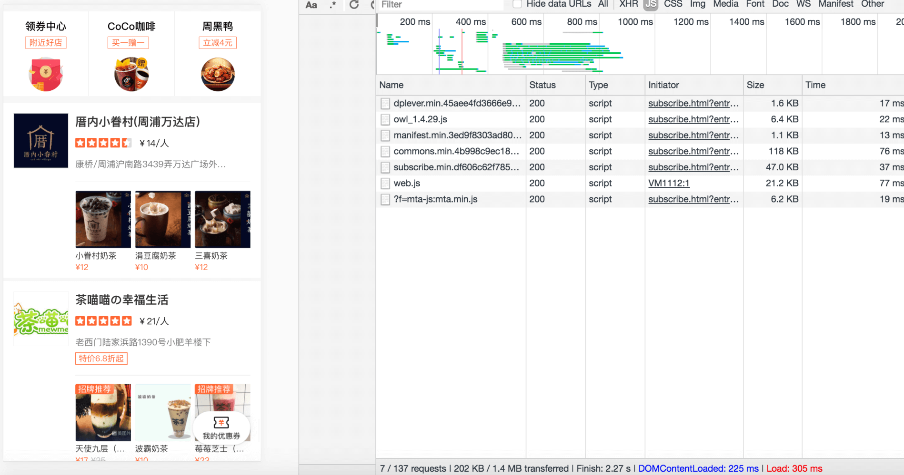
升级后，可看到页面对应的两个 JS 文件 subscribe.min.[hash].js 和 commons.min.[hash].js，大小分别为47KB 和 118KB，加载时间分别是 37ms 和 76ms，页面总体的资源加载时长为 305ms。可看出，页面中的业务代码，相比升级前有更多的公共代码被提取到 commons 中，使得页面并行加载静态资源时，加载时间有相应的减少，总体加载时间减少了 16% 左右。
总上可以看出，一方面，项目打包升级后，多入口的 JS 业务代码中相比有更多公共部分被提取了出来，使得页面加载并行请求 JS 源时，页面加载资源的速度有相应的提升；另一方面，提取的公共代码部分 commons 第一次加载后会缓存在 APP 中，当从首页跳转到其他页面时，不再需要重新请求公共资源，从内存读取即可，这时可减少更多的加载时间。
总结
这次 webpack4 打包升级效果还是很显著的，特别是包体积的减小以及打包速度的提升，后期对于资源加载速度的提升还是可以再进行更加深入的研究